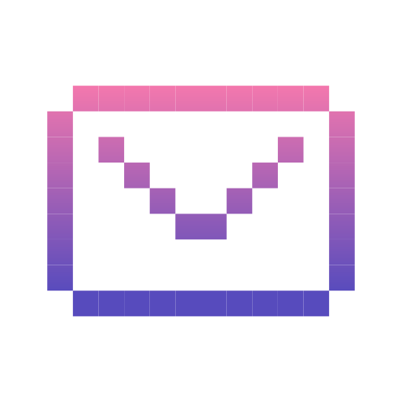

Apresentação

Olá, me chamo Luciana, tenho 31 anos, sou natural de São José dos Campos (terra do bolinho caipira), Vale do Paraíba no interior de São Paulo e atualmente moro em Guarulhos. A minha mudança para Guarulhos se deu por causa da minha primeira graduação na área de humanas da Universidade Federal de São Paulo(Unifesp). Sempre gostei de estudar e sempre fui curiosa, me identificava mais com a área de humanidades, mas ficava uma pontinha de curiosidade na área da tecnologia. Ainda no ensino formal acreditava que a parte de exatas e tecnologia eram um tanto inalcançáveis para mim. Dessa forma, me formei em um curso de humanas, prestei concursos, fiz uma complementação pedagógica para poder dar aula e trabalho em um cargo administrativo na prefeitura de Guarulhos. Agora, depois de duas formações, andei pensando em transição de carreira e fui me inscrevendo em tudo quanto foi curso que me surgiu como a chance de conhecer algo novo gratuitamente. Nessa busca, conheci o Elas na Tech 2023 e sou muito grata por essa oportunidade que me surgiu, pois me possibilitou ter contato com o conteúdo voltado ao desenvolvimento web, com cursos excelentes e monitoria que facilitavam o aprendizado. Além do mais, o projeto contou com Webnars com profissionais experientes e capacitadas, dispostas a ajudar as alunas com dicas importantes sobre o mercado de tecnologia.
Início da Jornada

Iniciei nessa jornada por acaso, tinha vontade de aprender algo voltado para a área de tecnologia e em certo momento, depois de pesquisar cursos na internet, acessei o Facebook e me apareceu a divulgação do Elas na Tech como sugestão. Fiquei interessada não apenas pela oportunidade de fazer o curso de forma gratuita, como também pela proposta de ensinar mulheres e assim, contribuir para a ampliação delas nesse ramo.
Por curiosidade me inscrevi e consegui entrar na turma 10 síncrona. Muitas coisas eram inéditas para mim, como utilizar o Visual Studio Code e o Github. Foi muito interessante escrever as primeiras linhas em HTML, visualizar os resultados de cada projeto desenvolvido no decorrer das semanas e assim perceber a evolução no aprendizado. Me inscrevi despretensiosamente e quando percebi já estava colocando responsividade em uma página ou desenvolvendo uma calculadora. Entrei nessa jornada sem imaginar tudo o que iria aprender, me senti desafiada desde o início, sempre descubro algo novo e por escolha, vou continuar estudando.
Desafios
Antes de participar dessa jornada tinha escrito um código ou outro em plataformas online como o Google Colab. Entretanto, eram experiências pontuais e eu não tinha dado continuidade. Com o Elas na Tech consegui manter a constância nos aprendizados. O primeiro desafio foi tentar entender os conceitos de internet, HTML de forma teórica. O próximo desafio foi lidar com o VSCODE, tudo era novidade e cada comando me deixava confusa. A próxima novidade foi interagir com o Git e o Github, principalmente o Github, uma plataforma com muitas funcionalidades e que sigo aprendendo a mexer. A princípio, foi difícil escrever as primeiras linhas no HTML , mas consegui ir me acostumando, até que entrou o CSS, o flexbox e a responsividade, desafios que eu continuo superando. Posteriormente, o Javascript entrou na minha vida. Gostei, não é fácil, mas me interessei e ainda tenho muito a aprender e praticar. Por fim, entramos no Python, juntamente com o desenvolvimento do projeto final. Uma hora estudo Python e em outra sigo com o projeto final. Manter o foco, trabalhar e conseguir fazer as duas coisas seguem sendo o maior desafio da reta final dessa jornada.
Conquistas
A primeira grande conquista foi o conhecimento que adquiri no decorrer dessa jornada, com conceitos totalmente diferentes do que estava habituada. Posso afirmar com toda certeza que saí da minha zona de conforto. O resultado foi positivo, pois me possibilitou entender em quais conteúdos me identifico mais, para posteriormente me aprofundar e assim, iniciar a minha transição de carreira. A monitoria e os cursos, me fizeram perceber que é possível aprender novos conteúdos voltados ao desenvolvimento web, com determinação, foco e desenvolvendo a autonomia nos estudos. Ao assistir as aulas e elaborar os desafios, mesmo com as dificuldades encontradas, consegui me sentir capaz de desenvolver projetos, de fazer parte de uma realidade que para mim, antes parecia ser tão distante.
Aprendizados

- NOÇÕES BÁSICAS DE INTERNET: História da Internet, Definição de software e hardware, Definição de World Wide Web (WWW), Protocolo de Transferência de Hipertexto (HTTP).
- HTML: Definição de hipertexo (Imagens, sons e vídeos), tags semânticas, estrutura do layout: header, nav, main, section, article, footer, div.
- Tipos de linguagem de programação: Abstração, Definição de Linguagens de Alto Nível(Exemplo: JavaScritp) e Linguagens de Baixo Nível(Assembly).
- VSCODE: Exemplo de editor de código, atalhos do programa, extensões importantes a ser instaladas, mudanças de atalho, uso do terminal, Emmet.
- GIT E GITHUB: versionamento de projeto com o Git, comandos Git. Plataforma Github: criar repositório, sincronizar projeto com git clone, uso do comando push, comando pull. Branches: master/brain. Aba Issue.
- CSS: margin, padding, border, background, alinhamento de imagens, de texto, menu, responsividade (mobile first), flexbox.
- JAVASCRIPT: Linguagem de programação de alto nível com tipagem fraca, variável, DOM, menu hamburguer, funções, operadores aritméticos, operadores lógicos e relacionais, estruturas condicionais, tipos de variáveis, conversão de variáveis.
- BOOTSTRAP: framework, containers, carrossel de imagens
- PYTHON: Linguagem de programação de alto nível, extensão de Python para o VSCODE, estrutura condicional if, else, formatação de string, estrutura de repetição for e while
Projetos
- Problema(s) resolvido(s): Reproduzir layout HTML de acordo com os comandos e medidas propostos no modelo. Apenas a cor do layout foi alterada.
- Tecnologias usadas: HTML, CSS.
- Papel no projeto: Trabalhar estrutura básica do HTML (parágrafo, hierarquia dos títulos: h1 ao h6, lista ordenada e não ordenada, link com a tag a) no VSCODE. Também aprender a vincular o CSS ao HTML. usar classe para alterar a cor de fundo. No CSS, trabalhar elementos como: bordas, margens, padding, altura, largura, alteração de cor de fundo e efeito hover.
- Resultados alcançados: Desenvolvimento de uma estrutura html, vinculada com os efeitos do CSS. Visual da página com: margens, bordas e listas de acordo com o padrão proposto no desafio.
Desafio aula 06
- Problema(s) resolvido(s): Conseguir inserir no plano de fundo do header, de forma a ocupar o espaço todo sem se repetir. Imagens aplicadas nos articles alinhadas à esquerda.
- Tecnologias usadas: HTML, CSS.
- Papel no projeto: Utilizar tags semânticas, entender a estrutura html, aprender a inserir e posicionar imagens. Inserir e editar menu no header. Editar o body com as sections, articles, header, nav e footer.
- Resultados alcançados: Desenvolvimento de uma página web com header, menu. Imagem de fundo, inserida, editada e alinhada no CSS. Aplicação de técnicas de posicionamento de imagens, tanto no header como nos articles.
Desafio aula 07
- Problema(s) resolvido(s): Alinhar nove imagens na página web utilizando flexbox e efeito hover em preto em branco nelas.
- Tecnologias usadas: HTML, CSS, FLEXBOX.
- Papel no projeto: Aprender a aplicar flexbox para alinhar os elementos de uma página web(Uso de justify-content, align-items, flex-wrap, align-content). Usar divs na formatação.
- Resultados alcançados: Desenvolvimento de uma estrura html com espaço delimitado para logo, menu e footer. Dentro do main, foram aplicadas nove imagens, distribuídas igualmente no espaço com o uso do Flexbox. Além disso, foi aplicado o efeito hover em escala de cinza, deixando as imagens em preto em branco quando o mouse passa por elas.
Desafio aula 08
- Problema(s) resolvido(s): Conseguir fazer com que as imagens escolhidas mudassem de posição usando a responsividade, media query, flexbox e outros elementos do CSS. Aplicar legendas com a mesma largura das imagens, com responsividade e o efeito hover.
- Tecnologias usadas: HTML, CSS, RESPONSIVIDADE.
- Papel no projeto: Aprender a utilizar a responsividade no desenvolvimento de páginas web de forma a deixá-las formatadas de acordo com cada tamanho de tela. Usar técnicas como display-block, box-sizing: bordex-box, dentre outras.
- Resultados alcançados: Quatro imagens foram inseridas na página web e de acordo com o tamanho de tela mudam a sua disposição: na horizontal para telas maiores e na vertical para telas menores. Ademais, foram inseridas legendas nessas imagens, que acompanham as imagens de acordo com a mudança da disposição das mesmas.
Desafio aula 09
- Problema(s) resolvido(s): Elaboração de um site inteiro responsivo com: vídeo, botão e a técnica display none para telas maiores. Uso do Google Fonts para usar uma fonte diferente e de acordo com o tema do site.
- Tecnologias usadas: HTML, CSS, RESPONSIVIDADE.
- Papel no projeto: Usar a responsividade em um site inteiro, planejar a disposição dos elementos da página de acordo com cada tamanho de tela. Pesquisar e utilizar display none no botão trailer e nos botões dos articles.
- Resultados alcançados: Site responsivo com menu, sections, articles com imagem, parágrafo e botão "Saiba mais". Uso do display none no botão do trailer em telas menores. Utilização de fonte diferente com o Google Fonts.
Desafio aula 10
- Problema(s) resolvido(s): Desenvolvimento de um programa com Javascript. Utilização de raciocínio lógico para definir as operações lógicas, relacionais e as estruturas condicionais que seriam utilizadas e como seriam utilizadas para que as condições fossem atendidas.
- Tecnologias usadas: HTML, CSS (opcional nesse desafio), JAVASCRIPT.
- Papel no projeto: utilizar os primeiros comandos em JAVASCRIPT, aliado aos operadores lógicos, relacionais, estruturas condicionais, alert, prompt de comando. Usar raciocínio lógico para escrever o programa.
- Resultados alcançados: Escrita de um programa que pede ao usuário um número inteiro e verifica se o número atende aos seguintes requisitos: tem que ser um número par e um número positivo e menor que 100. Após averiguar se o número digitado atende aos critérios, o programa emite as seguintes mensagens: "O número atende aos critérios.", quando o número atende aos requisitos e mensagem "O número não atende aos critérios.", quando não atende ao que foi exigido.
Desafio aula 11
- Problema(s) resolvido(s): uso de dois listeners: click e mouseout. Elaboração de funções para aplicar as operações matemáticas da calculadora e do botão "limpar".
- Tecnologias usadas: HTML, CSS, JAVASCRIPT, DOM (DOCUMENT OBJECT MODEL), LISTENER.
- Papel no projeto: desenvolver páginas mais interativas e dinâmicas, para tanto, aprender a usar o evento DOM para selecionar e criar alertas para cada tipo de interação a ser aplicada. Desenvolver familiariedade com o uso de funções, aprender a selecionar elementos e criar efeitos de listener como: click, mouseout.
- Resultados alcançados: Desenvolvimento de uma calculadora que realiza as operações básicas: soma, subtração, multiplicação e divisão. Ademais, as teclas mudam de cor quando são clicadas, quando a seta do mouse passa por cima delas e quando sai. Também é escrito o resultado da operação como: " A soma é igual a: ", "A subtração é igual a: ", "A multiplicação é igual a:" , "A divisão é igual a: ". Por fim, a calculadora também possui o botão limpar, que apaga o resultado da operação quando clicada.
Desafio aula 12
- Problema(s) resolvido(s): Desenvolvimento de footer responsivo com imagens alinhadas. Plano de fundo com imagem alinhada no centro e fixa mesmo quando a tela muda de tamanho. Alteração do Ícone padrão do title.
- Tecnologias usadas: HTML, CSS, JAVASCRIPT, MENU HAMBÚRGUER, GOOGLE ICONS.
- Papel no projeto: Utilizar o menu hambúguer de acordo com o tamanho de tela. Aprender a elaborar footer com imagens e layout responsivo.
- Resultados alcançados: Página responsiva com imagem de fundo centralizada e fixada, menu hambúrguer em telas menores. Footer com ícones das redes sociais alinhados na horizontal em telas maiores e na vertical em telas menores, além do parágrafo alinhado ao centro. Alteração do ícone do title para o símbolo voltado ao tema da página.
Desafio aula 13
- Problema(s) resolvido(s): Botão "galeria" adicionado ao centro da página, utilizando flexbox. Fazer com que um carrossel de imagens do mesmo tema abra em outra página quando o botão é clicado. Ícone do title da página principal e da página do carrossel de imagens, modificado. Fazer com que o carrossel de imagens fique centralizado na vertical em telas menores.
- Tecnologias usadas: HTML, CSS, JAVASCRIPT, BOOTSTRAP, CARROSSEL DE IMAGENS.
- Papel no projeto: Aprender a utilizar Bootstrap, framework e carrossel de imagens em uma página web; e a desenvolver carrossel de imagens responsivo. Aprender a alinhar imagens com Bootstrap.
- Resultados alcançados: Continuidade da página desenvolvida no desafio anterior com footer composto por ícones e parágrafo alinhados, menu hambúrguer, botão "galeria" alinhado no centro da página, que quando clicado abre o carrossel de imagens. Em telas menores, as imagens ficam centralizadas verticalmente.
Desafio aula 14
Depoimento
Contatos

Telefone
- 
E-mail:
luciana.gp98@gmail.com -
Endereço